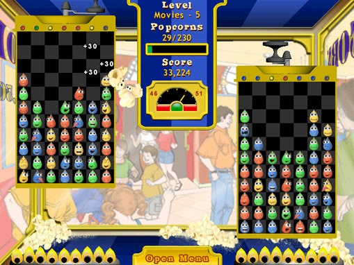
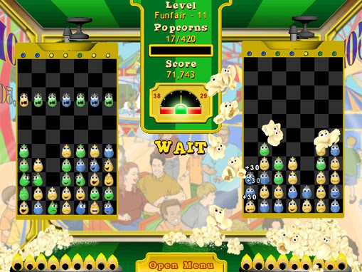

Super Popcorn Machine



Download Full Version Now!
Welcome to Super Popcorn Machine!
Are you able to pop popcorns in two containers and keep them balanced at the same time? That is the big challenge of this brand-new puzzle game!
Plenty of fun is waiting for you with three exciting game modes. Try facing the fast-paced entertainment of Action mode and test your brain in Puzzle and Strategy modes!
Features
Super Popcorn Machine is a great entertainment option for the whole family.
- Over 100 challenging game levels plus bonus levels
- Three game modes!
- World high scores
- Colorful Full Screen graphics
- 7 amazing power ups!
System Requirements
- Windows 98/ME/NT/2000/XP/Server 2003
- DirectX 3.0 or higher
- Pentium/AMD 200 MHz or higher
- 32 Mb RAM or higher
- 10 Mb free disk space